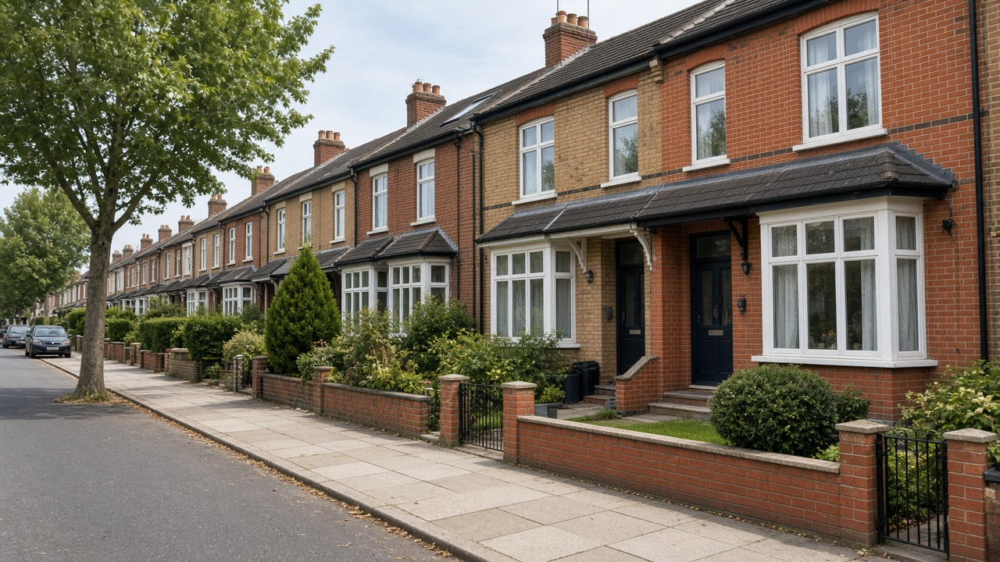

Landlord Compliance
Property Licensing in Barking and Dagenham: What Every Landlord Should Know
Understand landlord licensing in Barking and Dagenham, including selective and HMO licences, property requirements and how to check if you need a licence.

If you own a rental property in Barking or Dagenham, understanding property licensing is an important part of being a responsible landlord.
Many property owners assume licensing only applies to large shared houses or houses in multiple occupation (HMOs).
However, local licensing requirements can also apply to ordinary homes rented to a single household.
The type of licence required depends on several factors, including the property's location, the number of occupants and how the accommodation is arranged.
Failing to obtain a required licence can result in enforcement action and significant financial consequences.
This guide explains the main licensing categories and the steps landlords should take to understand their responsibilities.
1. What Is Property Licensing?
Property licensing is a system used by local councils to regulate certain types of privately rented accommodation.
Its purpose is to help ensure rental properties meet appropriate standards and are managed responsibly.
Licensing can involve checks on property safety, occupancy arrangements and the suitability of the person responsible for managing the property.
In Barking and Dagenham, landlords may need to consider three main licensing categories:
- Mandatory HMO licensing.
- Additional HMO licensing.
- Selective licensing.
These categories serve different purposes.
The licensing requirements that apply to one property may not be the same as those applying to another property nearby.
Mandatory HMO Licensing
Larger shared houses, generally five or more people forming at least two households.
Additional HMO Licensing
Smaller shared houses in the borough, including some homes with three or four occupants.
Selective Licensing
Some privately rented homes occupied by a single household in designated areas.
2. Understanding Mandatory HMO Licensing
A house in multiple occupation, commonly known as an HMO, is generally a property occupied by at least three people forming more than one household who share facilities such as a kitchen or bathroom.
For example, a house occupied by several unrelated adults who share cooking and washing facilities may be considered an HMO.
Mandatory HMO licensing applies nationally in England to qualifying larger HMOs.
Broadly, this includes properties occupied by five or more people forming at least two households and sharing basic facilities, subject to the relevant statutory definitions and exemptions.
Landlords operating these properties must ensure that the appropriate licence is in place.
Large HMOs can also be subject to additional requirements relating to fire safety, facilities, room sizes and property management.
3. What Is Additional HMO Licensing?
Additional licensing allows local authorities to extend HMO licensing requirements to certain properties that do not fall within the mandatory licensing category.
In Barking and Dagenham, the council has introduced an additional HMO licensing scheme covering smaller shared properties.
For example, an HMO occupied by three or four people forming two or more households may require an additional licence.
This is particularly relevant to landlords who rent rooms individually or let houses to groups of unrelated tenants.
A property does not need to be particularly large or have multiple floors to be classified as an HMO.
The number of occupants, household arrangements and shared facilities are important considerations.
Practical tip: Don't assume that renting to fewer than five people automatically means your property does not require an HMO licence.
4. What Is Selective Licensing?
Selective licensing is different from HMO licensing.
It can apply to privately rented properties in designated areas, including homes occupied by a single household.
For example, a landlord renting a two-bedroom house to one family may need a selective licence if the property falls within a designated licensing area and is not exempt.
Barking and Dagenham operates a selective licensing scheme covering designated areas of the borough.
Whether a particular property needs a selective licence depends on the applicable scheme boundaries and exemptions.
This is why checking the exact property address is important.
Owning only one rental property does not automatically exempt a landlord from licensing.
5. How Can You Check Whether Your Property Needs a Licence?
The safest starting point is the council's official guidance.
The London Borough of Barking and Dagenham provides information about licensing categories, designated areas, exemptions and applications.
Landlords should check:
The property address. Make sure the property is located within the relevant local authority area and, where applicable, the designated licensing zone.
The number of occupants. How many people live at the property?
The number of households. Are the occupants members of one household or several separate households?
The living arrangements. Do occupants share a kitchen, bathroom or other basic facilities?
Any applicable exemptions. Certain properties or arrangements may be excluded from particular licensing requirements.
You can begin by visiting the council's official Do I Need a Licence? page.
If you're uncertain, contact the council for clarification before proceeding.
6. What Documents Might You Need?
A property licence application can involve several supporting documents.
Depending on the licence type and property, landlords may need to provide:
- Property ownership and management information.
- Tenancy agreements.
- A valid Energy Performance Certificate.
- Electrical safety documentation.
- Gas safety records, where applicable.
- Property floor plans.
- Fire safety information and assessments, where required.
- Details of the proposed licence holder and managing arrangements.
The council may also assess whether the proposed licence holder and manager meet the relevant suitability requirements.
For an HMO, additional information about occupancy, amenities and fire precautions may be necessary.
Having the required documents organised before starting an application can make the process easier.
The council provides further details on its Property Licensing Application Process page.
7. Common Property Licensing Mistakes
There are several mistakes landlords should try to avoid.
Assuming All Rental Properties Follow the Same Rules
Different property types can fall under different licensing categories.
A single-family home and a shared house may require different licences.
Forgetting to Check Before Letting
Licensing should be considered before the property is offered for occupation.
Waiting until tenants have already moved in can create unnecessary complications.
Overlooking Changes in Occupancy
If the number of residents or household arrangement changes, the property's licensing position may also change.
Confusing Licensing With Planning Permission
A property licence does not automatically provide planning permission for a particular use.
For example, converting a family home into an HMO may raise separate planning requirements.
Forgetting Licence Conditions
Obtaining a licence is not the end of the process.
The property must continue to meet the relevant conditions throughout the licence period.
Assuming a Managing Agent Removes All Responsibility
An agent may assist with licensing administration or property management, but responsibility depends on the legal requirements, the named licence holder and the management agreement.
Landlords should understand those arrangements clearly.
8. How Good Property Management Can Help
Property licensing involves more than submitting an application.
Landlords also need to maintain suitable standards, organise relevant inspections and keep important records.
A well-organised approach to property management can make these responsibilities easier to handle.
For owners managing multiple rental properties, keeping track of different licensing and documentation requirements can be particularly challenging.
Professional assistance may be useful where landlords need support coordinating inspections, organising paperwork or dealing with everyday management tasks.
However, landlords should always confirm exactly which responsibilities their managing agent agrees to undertake.
Final Thoughts
Property licensing is an important consideration for landlords in Barking and Dagenham.
Whether you rent a family home, a flat or a shared property, understanding the relevant licensing requirements can help you avoid costly mistakes.
The key is not to make assumptions based solely on the size of your property or the number of tenants.
Check your property's circumstances, consult official council guidance and address any requirements before problems arise.
Need Help Managing a Rental Property in Barking or Dagenham?
Safin Properties UK welcomes enquiries from landlords looking for professional property management support.
Whether you own a single rental property or manage several, get in touch to discuss your requirements.
Official reference: London Borough of Barking and Dagenham: Property Licensing. The council confirms its mandatory HMO, additional HMO and selective licensing arrangements, including their respective occupancy criteria.
Important: Property licensing rules, designated areas and exemptions can change. Always confirm the requirements for your specific property with the council before making decisions.